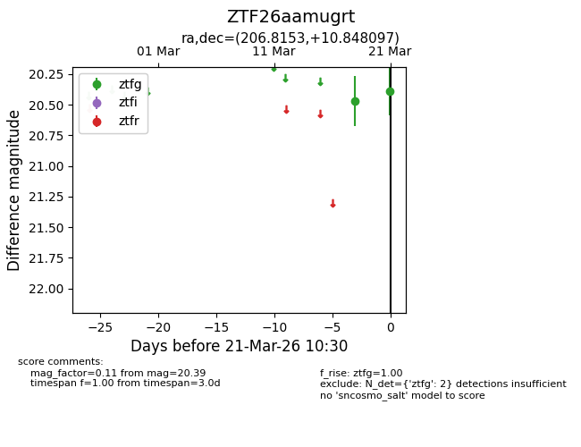
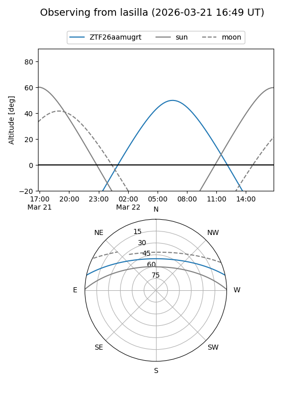
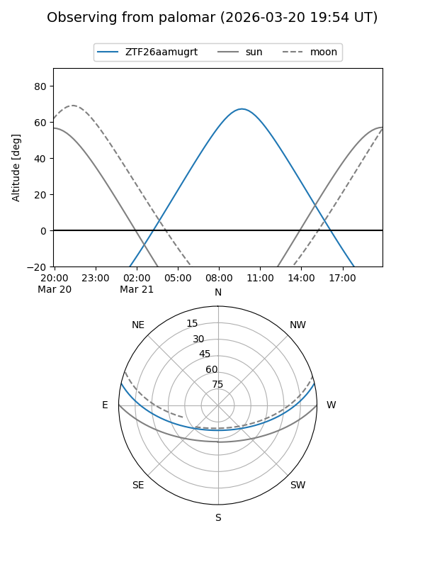

ZTF26aamugrt
Target ZTF26aamugrt at 2026-03-21 10:32
Aliases and brokers:
FINK: link
Lasair: link
ALeRCE: link
alt names
ZTF26aamugrt (ztf,fink_ztf)
Coordinates:
equatorial (ra, dec) = 206.8153,+10.84810
equatorial (HMS+DMS) = 13:47:15.66,+10:50:53.15
galactic (l, b) = (344.4968,+69.08344)
Flags:
Photometry:
last ztfg=20.39
2 ztfg detections
Lightcurve

Visibility


Additional plots